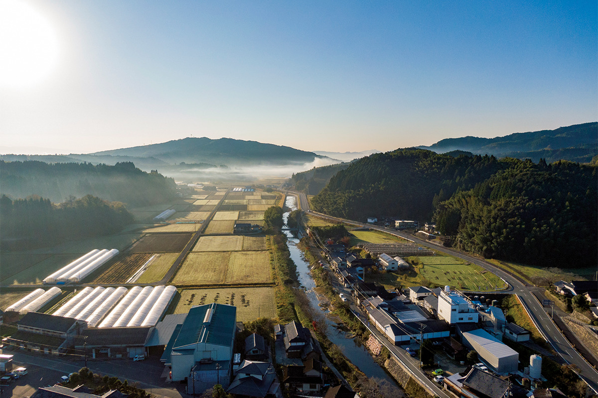
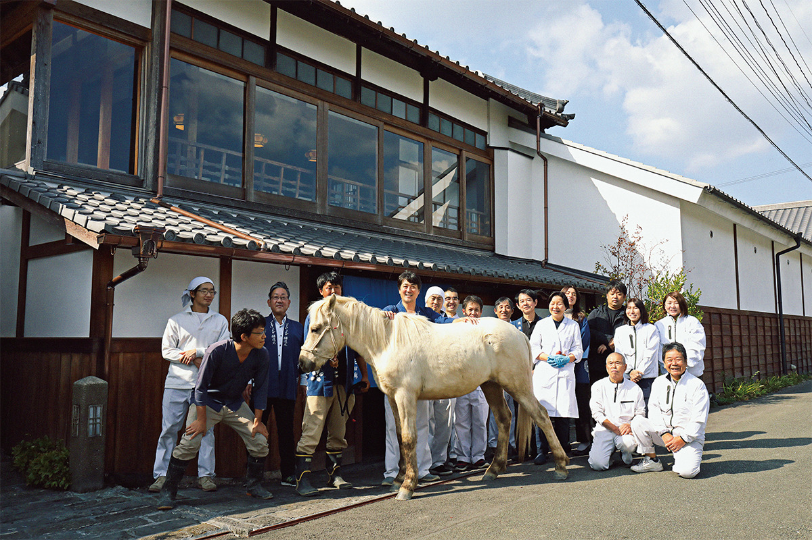
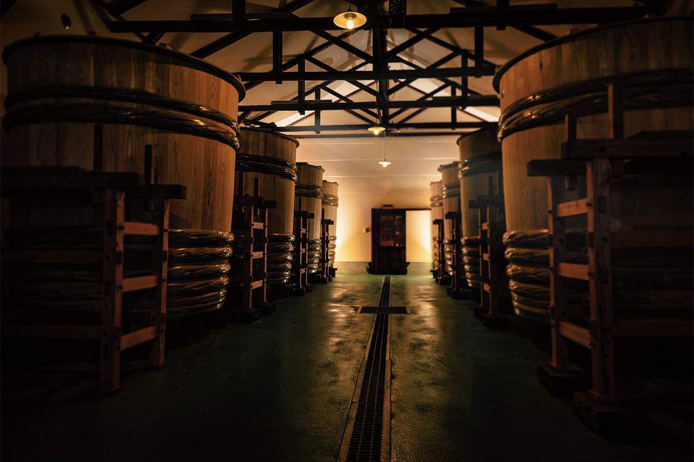
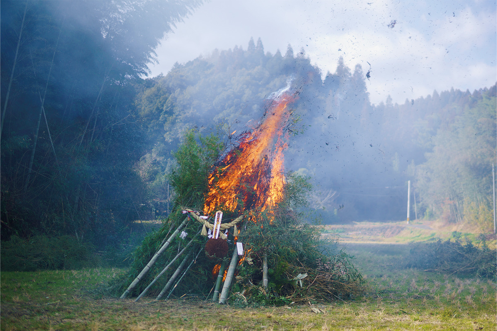
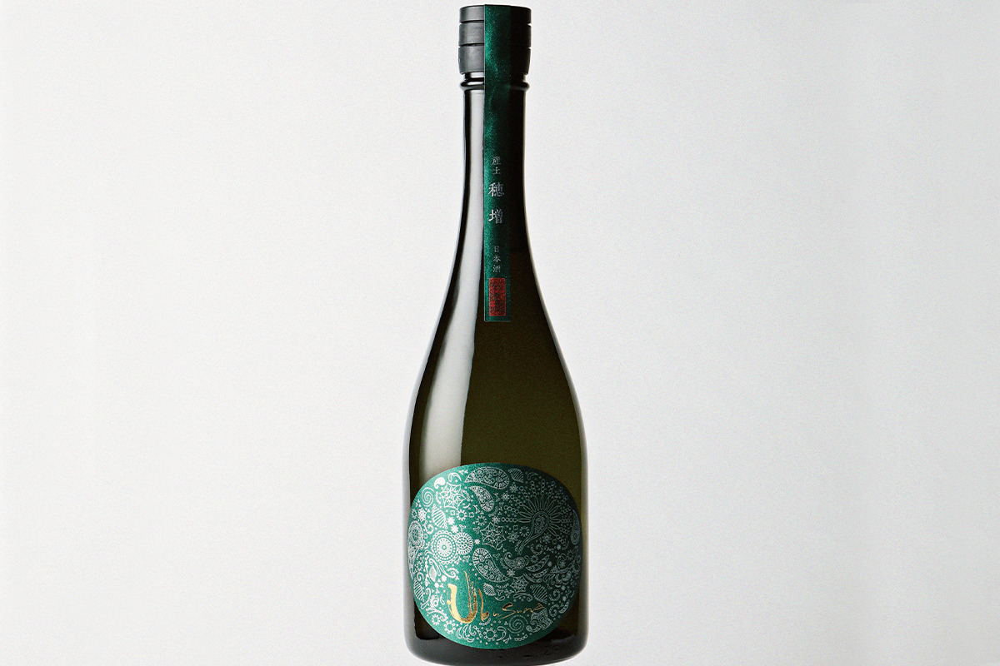
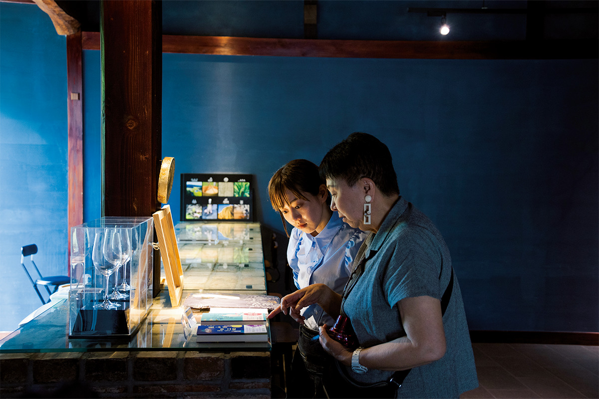
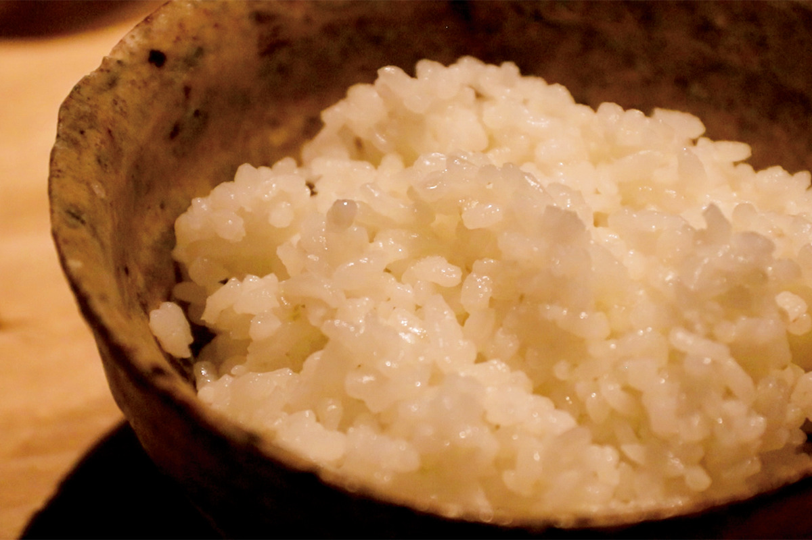

Префектура Кумамото · Нагоми · сакэ
Hananoka Shuzo в Нагоми: сакэ Ubusuna из риса, земли и деревянных чанов

На севере префектуры Кумамото, в тихом посёлке Нагоми, сакэварня Hananoka Shuzo делает сакэ по методам эпохи Эдо и с помощью лабораторных приборов. Её хозяин называет это не возвращением к истокам, а их развитием.
Философия
Сакэ из «родной земли»
Нагоми лежит на севере префектуры Кумамото, среди рисовых полей вдоль реки Ванигава, притока реки Кикути. Рис здесь выращивают уже около двух тысяч лет. В этих местах и стоит сакэварня Hananoka Shuzo.
Её шестой глава, Киётака Канда, построил всё дело вокруг одного слова: «убусуна». Это старинное японское слово означает щедрость земли и ту основу, из которой рождается всё живое. В нём сходятся три идеи: уважение к природе, жизнь в согласии с бактериями и микроорганизмами и человек, который ведёт этот процесс осознанно. Отсюда и название главной марки сакэварни, Ubusuna. Для замеса берут родниковую воду, которая проходит через породы вулкана Асо, а рис используют только тот, что вырос в долине реки Кикути.

Сакэварня держится за местную культуру во всём. Поля обрабатывают по методам природного земледелия, которые ведут начало ещё с эпохи Эдо. Сакэ бродит в деревянных чанах, где живут полезные бактерии. А вместе с жителями округи сакэварня поддерживает старые обряды. Даже пахать здесь снова стали на лошади, как в старину делали по всей префектуре. Белый конь Кикуносин стал полноправным членом команды, а в его имени зашифровано желание идти в будущее вместе с рекой Кикути.
Рис
Возвращение «первого риса Поднебесной»

Работа Киётаки Канды со временем ушла ещё глубже. В эпоху Эдо рис сорта хомасэ считали лучшим в стране, но потом он исчез. Фермер из соседнего Кикути возродил его всего из 40 семенных зёрен, и из этого риса сакэварня сделала новое сакэ, Ubusuna Homase.
Сакэ здесь варят методом кимото, бродят его в деревянных чанах, как в эпоху Эдо. Но рядом со старыми приёмами стоят современные приборы: например, аппарат Кьельдаля, который определяет, сколько белка в рисе. Поэтому сам хозяин говорит не о возвращении к истокам, а об их развитии. Он изучает старые тексты, ставит опыты и ищет сакэ, которое могло появиться только здесь.
«Я хочу, чтобы через сакэ люди узнавали японскую культуру и японский дух»
Киётака Канда, шестой глава сакэварни

В 2023 году сакэварня получила золотую награду в категории «еда» в конкурсе туристических проектов Кюсю, который учредила железнодорожная компания JR Kyushu. Член жюри призналась, что её покорили философия и личность Киётаки Канды.

Визит
Дегустация в Hanakairou
Сакэварню стоит сделать целью поездки. Кроме самого производства здесь есть бар, магазин и галерея, где фотографии рассказывают, как рождается сакэ.
Часть старого здания сакэварни перестроили и открыли в ней зал Hanakairou, «Цветочную галерею». Здесь можно попробовать сакэ: в 2023 году три вида на выбор стоили 1000 иен. Тогда же сакэварня собиралась открыть рядом столовую, где рис хомасэ и кабасико, ещё один старый местный сорт, варят в печи-камадо и подают в момент «ниэбана», когда зерно только становится кашей и полно влаги. После обновления зал Hanakairou снова открылся 30 мая 2026 года.


Hananoka Shuzo
- Адрес
- префектура Кумамото, уезд Тамана, Нагоми, Ниси-Ёсидзи, 2226-2
- Телефон
- +81 968-34-3333 (зал Hanakairou)
- Часы работы
- зал Hanakairou 10:00–16:30
- Выходные
- новогодние праздники
- Цены / Вход
- дегустация трёх видов сакэ 1000 иен
- Сайт
- hananoka.co.jp
Фото: Хиромаса Оцука, Норихито Судзуки.